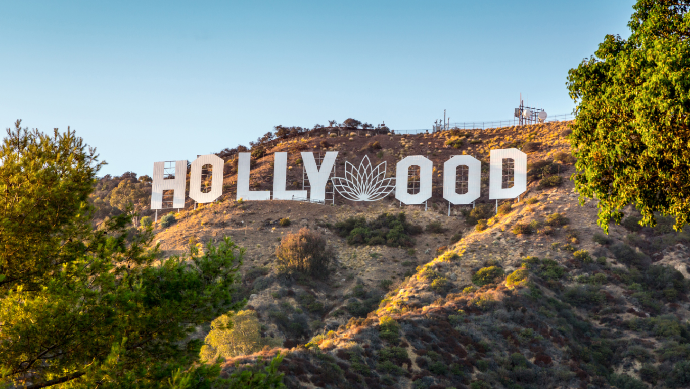
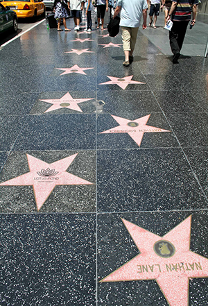
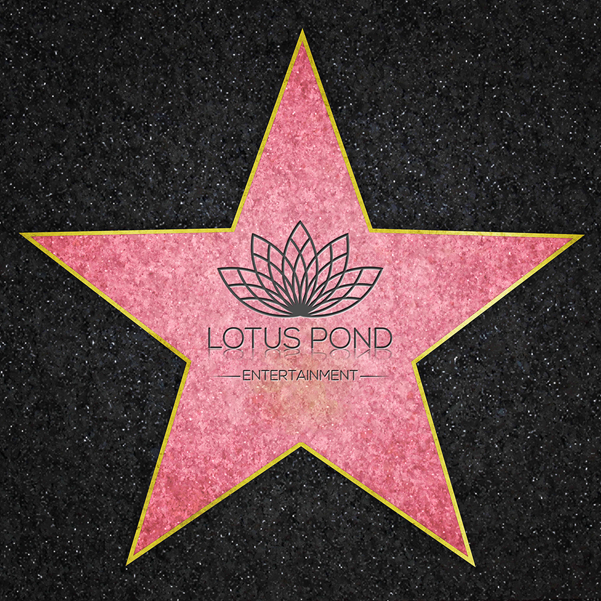

Creating Global Entertainment
While the export growth for both Chinese and Indian media is attributed to consumption by their respective diasporas, Lotus Pond’s objective is to harness the creative and business talent in both countries. Lotus Pond will create entertainment properties made in China and India that will excite a global audience and challenge Hollywood’s domination of world class entertainment.
For many years, China has exported martial arts movies that have found an audience amongst the non-Chinese. China is responsible for mainstream Hollywood stars such as Jet Li, Stephen Chow, and Jackie Chan. These films have always been in the Chinese languages and featured Chinese themes (such as Crouch Tiger, Hidden Dragon, or KungFu Hustle). India’s domestic hits haven’t surpassed China’s recent numbers, but India’s entertainment reaches far more countries. Its “Bollywood” song and dance films are equivalent to the martial arts films of China in terms of popularity, plus the overall volume of films help India reach close to China’s entertainment export revenue.
We seek development and production partners in China who shares our vision. Together will combine our strengths to create entertainment that goes beyond martial arts or Bollywood. We want China and India to break beyond their own domestic offerings and provide serious competition to the Hollywood entertainment industry. China and India will tell stories that resonate with an international market. Lotus Pond has the business knowledge, the technical ability, and the talent to make this vision into a reality.
Ultimately, the right partnership would involve a combination of financing from India and China plus licensing to one or two major markets and tax credits so that the remainder of the world becomes our profit center that we share equitably.
What Lotus Pond Can offer its Chinese Partners:

Developed Projects: Lotus Pond has several projects in various stages of development that has strong international appeal, and has the capital to add bankable talent to these projects based on mutual interests by its potential partners.
Development Capital: Lotus Pond will finance or co-finance development costs from optioning properties to screenplays to talent acquisitions. These include our properties being considered by our co-production partners as long as these projects have international appeal.
Co-financing with India: If India is a potential location, we can offer studio services in exchange for Indian territorial rights. We can also offer state of the art VFX, post-production, and animation.
International Licensing: Rudy Rupak, partner of Lotus Pond has had over seven years of experience in obtaining studio financing, television financing, and international rights sales to help finance a production or generate profits for existing projects prior to production. Rudy also has knowledge and experience with tax credit financing in Canada, Europe, UK, and various US states. He will work on co-production financing on all properties that we agree to develop together.
Film Financing: Sashi Reddi, partner of Lotus Pond has strong financing connections to provide debt financing/factoring against contracts from studios and television entities. We will work with our partners to make sure our projects are not only a reality but also work to make sure that the projects are profitable.
What Lotus Pond Seeks from its Chinese Partners:
Projects in Development: While Lotus Pond has several projects in development and we want our potential partners to feel the same enthusiasm as we do for the projects we have developed, we are open to exploring projects by our potential Chinese partners provided such properties have strong international appeal and not just regional appeal. Projects made in China and India for the global market should be our shared mission.
Chinese Production Infrastructure: If a project can be shot in China we would want our potential partner to guide us through the process, lead the talent development, and production. These costs would be borne by our partner in China
China Production Costs: We would expect our Chinese partners to have strong connectivity with the various Chinese broadcasters, streaming services and filmed media outlets who would be willing to license the cost of shooting in China so that there is little risk to our partners.
How We Both Benefit
By creating properties with international appeal whose production costs can be covered by China, India and the sales to a few territories, together we stand to make significant profits from global exploitation of such properties.
Chinese Film Market Snapshot
In 2012, China became the second largest theatrical film market in the world after the USA. The Chinese market now accounts for just over 13% of global box office revenues. The film and television industries contribute an estimated 146 billion yuan to the Chinese GDP.
Box office receipts continue to grow at high rates. In 2014, total takings in 2014 were 4.8 times higher than in 2009. In the last twelve months, revenues expanded by 36 percent, reaching 29.6 billion yuan (US $4.8 billion). If inflation is accounted, real box office revenues were almost 4 times higher in 2014 than they were in 2009.
The total television audiences in China was over 1.277 billion in the year of 2013. In the past 10 years, Chinese TV viewers spent on average 130-170 minutes watching TV every day. Over 3000 television stations operate across 16 television and radio companies.
Combined television and radio revenues more than doubled between 2009 and 2014. Television industry revenues have increased 87% (inflation-adjusted) from 2009-2014 with an estimated 2.1 billion yuan in export receipts in 2014. Film and television industry exports were the equivalent to 0.15% of total national exports of services (2014). Of this, 90% was generated by the film industry, with the remaining 10% generated by the television industry.
Indian Entertainment Market Snapshot
India’s vibrant Media and Entertainment (M&E) industry provides attractive growth opportunities for global corporations. The country produces more than 600 television channels, 100 million pay-tv households, and 1,000 films annually. High volumes of consumption and economic liberalization have enticed many of the world’s media giants to the Indian market for more than two decades. In recent years, near double-digit annual growth and a fast-growing middle class has renewed the surge investments into the country by global companies.
The growth in popularity of digital media continues to surge. In 2014 the industry saw significant growth in digital advertising, 44.5% over 2013 figures. At the same time, traditional media continued to exhibit healthy growth rates, with the television sector continuing on its path of cable digitization. Advertising across media, buoyed up by general election spends and the emergence of e-commerce as a significant new category. Advertising revenues in 2014 grew 14.2% over 2013, to reach INR 414 billion ($623,020,734 USD) of which print (43%) and television (37%) captured the lion’s share.
The bulk of M&E industry revenues are generated by the filmed entertainment sector, followed by games, and music. In 2015, India’s film industry was valued at 138.2 billion Rupees ($2.1 Billion USD compared to the US box office total of 10.84 billion). The industry is projected to grow by a staggering 64% by 2020. India’s box office revenue weighed in at 111 billion Rupees (1,668,258,000 USD) in 2015. Box office revenue is expected to climb 58% by 2020. India’s television industry was worth an estimated 6.93 billion U.S. dollars in 2013.
The Indian film industry has grown remarkably since the beginning of the twenty-first century. New Indian diasporas in North America, the UK, Asian, and Arabic countries have led to the growth of exports at 30-50% annually.
For both countries, the growth in box office receipts and TV revenue is the result of a substantial surge in demand for film and TV entertainment. High population, strong economic growth, rising incomes, and a growing middle class drive growth in domestic entertainment sectors. Combined with the expansion of Indian and Chinese diasporas, film and entertainment revenues are projected to continue their trend of steady increase.
Can there be International Demand for Projects Made In China and India?
It all starts with “A Good Story, Well Told.” If we can identify strong properties with international appeal then there is no reason that it cannot be made for the international market with Chinese and Indian talent as well as an international cast. Take for example a television series such as Dao Mu Bi Ji. While this story of young archeologist Wu Xie who is sent abroad for his own safety from those who murdered his parents and becomes interested in historical relics that may lead him to the mystery of his parents murder. While this series is hugely popular in China it is definitely a story with international appeal. Imagine if it were also shot in English, and had some international actors in it, then Dao Mu Bi Ji could have been licensed to other countries outside of China making a popular and profitable show even more profitable and popular. A portion of the show could have been shot in India to add production value. Or imagine a western TV series such as BBC’s MERLIN which scores an 8/10 on Douban.com. While the story may be British in character, imagine if your company could shoot such a project in China with an international cast but with Chinese production and special effects talent (but not necessarily on screen talent). There is no conceivable reason such a series could not be shot in China and THEN sold to the BBC, SyFy Channel in the US and others. China could still broadcast this series in China with “Made in China” pride and it could have still achieved the 8/10 score on Douban.com but the difference would be that instead of it being an imported television series it could be a formidable exported one from China. This is the kind of thinking we want to encourage in our potential partner.
